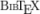

Ralf Greve - List of publications
[Peer-reviewed
journal articles]
[Books]
[Articles in books]
[Other publications]
See also:
 ResearcherID
Google Scholar
Scopus
ORCID
ResearcherID
Google Scholar
Scopus
ORCID
List includes publications submitted or in press. Online abstracts available by clicking on author names.
Peer-reviewed journal articles:
- Gaikwad, S. S., L. Hascoet, S. H. K. Narayanan, L. Curry-Logan, R. Greve and P. Heimbach. 2023.
- SICOPOLIS-AD v2: tangent linear and adjoint modeling framework for
ice sheet modeling enabled by automatic differentiation tool Tapenade.
Journal of Open Source Software 8 (83), 4679.
 | RIS | DOI
|
HUSCAP
DOI
|
HUSCAP - Greve, R., C. Chambers, T. Obase, F. Saito, W.-L. Chan and A. Abe-Ouchi. 2023.
- Future projections for the Antarctic ice sheet until the year 2300
with a climate-index method.
Journal of Glaciology, doi: 10.1017/jog.2023.41.
| RIS |
DOI - Moore, J. C., R. Greve, C. Yue, T. Zwinger, F. Gillet-Chaulet and L. Zhao. 2023.
- Reduced ice loss from Greenland under stratospheric aerosol injection.
Journal of Geophysical Research: Earth Surface (in press). - Seroussi, H., V. Verjans, S. Nowicki, A. J. Payne, H. Goelzer, W. H. Lipscomb, A. Abe-Ouchi, C. Agosta, T. Albrecht, X. Asay-Davis, A. Barthel, R. Calov, R. Cullather, C. Dumas, B. K. Galton-Fenzi, R. Gladstone, N. R. Golledge, J. M. Gregory, R. Greve, T. Hatterman, M. J. Hoffman, A. Humbert, P. Huybrechts, N. C. Jourdain, T. Kleiner, E. Larour, G. R. Leguy, D. P. Lowry, C. M. Little, M. Morlighem, F. Pattyn, T. Pelle, S. F. Price, A. Quiquet, R. Reese, N.-J. Schlegel, A. Shepherd, E. Simon, R. S. Smith, F. Straneo, S. Sun, L. D. Trusel, J. Van Breedam, P. Van Katwyk, R. S. W. van de Wal, R. Winkelmann, C. Zhao, T. Zhang and T. Zwinger. 2023.
- Insights on the vulnerability of Antarctic glaciers from the ISMIP6
ice sheet model ensemble and associated uncertainty.
The Cryosphere (in press).
The Cryosphere Discussions, doi: 10.5194/tc-2023-109 (preprint). - Willeit, M., R. Calov, S. Talento, R. Greve, J. Bernales, V. Klemann, M. Bagge and A. Ganopolski. 2023.
- Glacial inception through rapid ice area increase driven by albedo and
vegetation feedbacks.
Climate of the Past (submitted).
EGUsphere, doi: 10.5194/egusphere-2023-1462 (preprint). - Chambers, C., R. Greve, T. Obase, F. Saito and A. Abe-Ouchi. 2022.
- Mass loss of the Antarctic ice sheet until the year 3000 under a sustained
late-21st-century climate.
Journal of Glaciology 68 (269), 605-617.
| RIS |
DOI
|
HUSCAP - Greve, R. and C. Chambers. 2022.
- Mass loss of the Greenland ice sheet until the year 3000 under a sustained
late-21st-century climate.
Journal of Glaciology 68 (269), 618-624.
| RIS |
DOI
|
HUSCAP - Smith, I. B., N.-J. Schlegel, E. Larour, I. Isola, P. B. Buhler, N. E. Putzig and R. Greve. 2022.
- Carbon dioxide ice glaciers at the South Pole of Mars.
Journal of Geophysical Research: Planets 127 (4), e2022JE007193.
| RIS |
DOI
|
HUSCAP
(authors' version) - Edwards, T. L., S. Nowicki, B. Marzeion, R. Hock, H. Goelzer, H. Seroussi, C. J. Smith, N. C. Jourdain, D. Slater, C. M. McKenna, E. Simon, A. Abe-Ouchi, J. M. Gregory, E. Larour, W. H. Lipscomb, A. J. Payne, A. Shepherd, F. Turner, C. Agosta, P. Alexander, T. Albrecht, B. Anderson, X. Asay-Davis, A. Aschwanden, A. Barthel, A. Bliss, R. Calov, C. Chambers, N. Champollion, Y. Choi, R. Cullather, J. Cuzzone, C. Dumas, D. Felikson, X. Fettweis, K. Fujita, B. K. Galton-Fenzi, R. Gladstone, N. R. Golledge, R. Greve, T. Hattermann, M. J. Hoffman, A. Humbert, M. Huss, P. Huybrechts, W. Immerzeel, T. Kleiner, P. Kraaijenbrink, S. Le clec'h, V. Lee, G. R. Leguy, C. M. Little, D. P. Lowry, J.-H. Malles, D. F. Martin, F. Maussion, M. Morlighem, J. F. O'Neill, I. Nias, F. Pattyn, T. Pelle, S. Price, A. Quiquet, V. Radić, R. Reese, D. R. Rounce, M. Rückamp, A. Sakai, C. Shafer, N.-J. Schlegel, S. Shannon, R. S. Smith, F. Straneo, S. Sun, L. Tarasov, L. D. Trusel, J. Van Breedam, R. van de Wal, M. van den Broeke, R. Winkelmann, H. Zekollari, C. Zhao, T. Zhang and T. Zwinger. 2021.
- Projected land ice contributions to twenty-first-century sea level
rise.
Nature 593 (7857), 74-82.
| RIS |
DOI - Goto-Azuma, K., T. Homma, T. Saruya, F. Nakazawa, Y. Komuro, N. Nagatsuka, M. Hirabayashi, Y. Kondo, M. Koike, T. Aoki, R. Greve and J. Okuno. 2021.
- Studies on the variability of the Greenland Ice Sheet and climate.
Polar Science 27, 100557.
| RIS |
DOI
|
HUSCAP - Payne, A. J., S. Nowicki, A. Abe-Ouchi, C. Agosta, P. Alexander, T. Albrecht, X. Asay-Davis, A. Aschwanden, A. Barthel, T. J. Bracegirdle, R. Calov, C. Chambers, Y. Choi, R. Cullather, J. Cuzzone, C. Dumas, T. L. Edwards, D. Felikson, X. Fettweis, B. K. Galton-Fenzi, H. Goelzer, R. Gladstone, N. R. Golledge, J. M. Gregory, R. Greve, T. Hattermann, M. J. Hoffman, A. Humbert, P. Huybrechts, N. C. Jourdain, T. Kleiner, P. Kuipers Munneke, E. Larour, S. Le clec'h, V. Lee, G. Leguy, W. H. Lipscomb, C. M. Little, D. P. Lowry, M. Morlighem, I. Nias, F. Pattyn, T. Pelle, S. F. Price, A. Quiquet, R. Reese, M, Rückamp, N.-J. Schlegel, H. Seroussi, A. Shepherd, E. Simon, D. Slater, R. S. Smith, F. Straneo, S, Sun, L. Tarasov, L. D. Trusel, J. Van Breedam, R. van de Wal, M. van den Broeke, R. Winkelmann, C. Zhao, T. Zhang and T. Zwinger. 2021.
- Future sea level change under
Coupled Model Intercomparison Project Phase 5 and Phase 6
scenarios from the Greenland and Antarctic ice sheets.
Geophysical Research Letters 48 (16), e2020GL091741.
| RIS |
DOI
|
HUSCAP - Scheiter, M., M. Schaefer, E. Flández, D. Bozkurt and R. Greve. 2021.
- The 21st-century fate of the Mocho-Choshuenco ice cap in southern
Chile.
The Cryosphere 15 (8), 3637-3654.
| RIS |
DOI
|
HUSCAP - Sugiyama, S., N. Kanna, D. Sakakibara, T. Ando, I. Asaji, K. Kondo, Y. Wang, Y. Fujishi, S. Fukumoto, E. Podolskiy, Y. Fukamachi, M. Takahashi, S. Matoba, Y. Iizuka, R. Greve, M. Furuya, K. Tateyama, T. Watanabe, S. Yamasaki, A. Yamaguchi, B. Nishizawa, K. Matsuno, D. Nomura, Y. Sakuragi, Y. Matsumura, Y. Ohashi, T. Aoki, M. Niwano, N. Hayashi, M. Minowa, G. Jouvet, E. van Dongen, A. Bauder, M. Funk, A. A. Bjørk and T. Oshima. 2021.
- Rapidly changing glaciers, ocean and coastal environments, and their
impact on human society in the Qaanaaq region, northwestern Greenland.
Polar Science 27, 100632.
| RIS |
DOI
|
HUSCAP - Chambers, C., R. Greve, B. Altena and P.-M. Lefeuvre. 2020.
- Possible impacts of a 1000 km long hypothetical subglacial river
valley towards Petermann Glacier in northern Greenland.
The Cryosphere 14 (11), 3747-3759.
| RIS |
DOI
|
HUSCAP - Goelzer, H., S. Nowicki, A. Payne, E. Larour, H. Seroussi, W. H. Lipscomb, J. Gregory, A. Abe-Ouchi, A. Shepherd, E. Simon, C. Agosta, P. Alexander, A. Aschwanden, A. Barthel, R. Calov, C. Chambers, Y. Choi, J. Cuzzone, C. Dumas, T. Edwards, D. Felikson, X. Fettweis, N. R. Golledge, R. Greve, A. Humbert, P. Huybrechts, S. Le clec'h, V. Lee, G. Leguy, C. Little, D. P. Lowry, M. Morlighem, I. Nias, A. Quiquet, M. Rückamp, N.-J. Schlegel, D. Slater, R. Smith, F. Straneo, L. Tarasov, R. van de Wal and M. van den Broeke. 2020.
- The future sea-level contribution of the Greenland ice sheet:
a multi-model ensemble study of ISMIP6.
The Cryosphere 14 (9), 3071-3096.
| RIS |
DOI
|
HUSCAP - Levermann, A., R. Winkelmann, T. Albrecht, H. Goelzer, N. R. Golledge, R. Greve, P. Huybrechts, J. Jordan, G. Leguy, D. Martin, M. Morlighem, F. Pattyn, D. Pollard, A. Quiquet, C. Rodehacke, H. Seroussi, J. Sutter, T. Zhang, J. Van Breedam, R. Calov, R. DeConto, C. Dumas, J. Garbe, G. H. Gudmundsson, M. J. Hoffman, A. Humbert, T. Kleiner, W. H. Lipscomb, M. Meinshausen, E. Ng, S. M. J. Nowicki, M. Perego, S. F. Price, F. Saito, N.-J. Schlegel, S. Sun and R. S. W. van de Wal. 2020.
- Projecting Antarctica's contribution to future sea level rise
from basal ice shelf melt using linear response functions
of 16 ice sheet models (LARMIP-2).
Earth System Dynamics 11 (1), 35-76.
| RIS |
DOI
|
HUSCAP - Logan, L. C., S. H. K. Narayanan, R. Greve and P. Heimbach. 2020.
- SICOPOLIS-AD v1: an open-source adjoint modeling framework for ice sheet
simulation enabled by the algorithmic differentiation tool OpenAD.
Geoscientific Model Development 13 (4), 1845-1864.
| RIS |
DOI
|
HUSCAP - Robinson, A., J. Alvarez-Solas, M. Montoya, H. Goelzer, R. Greve and C. Ritz. 2020.
- Description and validation of the ice-sheet model Yelmo (version 1.0).
Geoscientific Model Development 13 (6), 2805-2823.
| RIS |
DOI
|
HUSCAP - Seroussi, H., S. Nowicki, A. J. Payne, H. Goelzer, W. H. Lipscomb, A. Abe-Ouchi, C. Agosta, T. Albrecht, X. Asay-Davis, A. Barthel, R. Calov, R. Cullather, C. Dumas, B. K. Galton-Fenzi, R. Gladstone, N. Golledge, J. M. Gregory, R. Greve, T. Hatterman, M. J. Hoffman, A. Humbert, P. Huybrechts, N. C. Jourdain, T. Kleiner, E. Larour, G. R. Leguy, D. P. Lowry, C. M. Little, M. Morlighem, F. Pattyn, T. Pelle, S. F. Price, A. Quiquet, R. Reese, N.-J. Schlegel, A. Shepherd, E. Simon, R. S. Smith, F. Straneo, S. Sun, L. D. Trusel, J. Van Breedam, R. S. W. van de Wal, R. Winkelmann, C. Zhao, T. Zhang and T. Zwinger. 2020.
- ISMIP6 Antarctica: a multi-model ensemble of the Antarctic ice sheet
evolution over the 21st century.
The Cryosphere 14 (9), 3033-3070.
| RIS |
DOI
|
HUSCAP - Sun, S., F. Pattyn, E. G. Simon, T. Albrecht, S. Cornford, R. Calov, C. Dumas, F. Gillet-Chaulet, H. Goelzer, N. R. Golledge, R. Greve, M. J. Hoffman, A. Humbert, E. Kazmierczak, T. Kleiner, G. R. Leguy, W. H. Lipscomb, D. Martin, M. Morlighem, S. Nowicki, D. Pollard, S. Price, A. Quiquet, H. Seroussi, T. Schlemm, J. Sutter, R. S. W. van de Wal, R. Winkelmann and T. Zhang. 2020.
- Antarctic ice sheet response to sudden and sustained ice-shelf
collapse (ABUMIP).
Journal of Glaciology 66 (260), 891-904.
| RIS |
DOI
|
HUSCAP - Greve, R. 2019.
- Geothermal heat flux distribution for the Greenland ice sheet, derived by
combining a global representation and information from deep ice cores.
Polar Data Journal 3, 22-36.
| RIS |
DOI
|
HUSCAP - Rezvanbehbahani, S., L. A. Stearns, C. J. van der Veen, G. K. A. Oswald and R. Greve. 2019.
- Constraining the geothermal heat flux in Greenland at regions of
radar-detected basal water.
Journal of Glaciology 65 (254), 1023-1034.
| RIS |
DOI
|
HUSCAP - Rückamp, M., R. Greve and A. Humbert. 2019.
- Comparative simulations of the evolution of the Greenland ice sheet under
simplified Paris Agreement scenarios with the models
SICOPOLIS and ISSM.
Polar Science 21, 14-25.
| RIS |
DOI
|
HUSCAP - Seddik, H., R. Greve, D. Sakakibara, S. Tsutaki, M. Minowa and S. Sugiyama. 2019.
- Response of the flow dynamics of Bowdoin Glacier, northwestern Greenland,
to basal lubrication and tidal forcing.
Journal of Glaciology 65 (250), 225-238.
| RIS |
DOI
|
HUSCAP - Seroussi, H., S. Nowicki, E. Simon, A. Abe-Ouchi, T. Albrecht, J. Brondex, S. Cornford, C. Dumas, F. Gillet-Chaulet, H. Goelzer, N. R. Golledge, J. M. Gregory, R. Greve, M. J. Hoffman, A. Humbert, P. Huybrechts, T. Kleiner, E. Larour, G. Leguy, W. H. Lipscomb, D. Lowry, M. Mengel, M. Morlighem, F. Pattyn, A. J. Payne, D. Pollard, S. F. Price, A. Quiquet, T. J. Reerink, R. Reese, C. B. Rodehacke, N.-J. Schlegel, A. Shepherd, S. Sun, J. Sutter, J. Van Breedam, R. S. W. van de Wal, R. Winkelmann and T. Zhang. 2019.
- InitMIP-Antarctica: an ice sheet model initialization experiment of
ISMIP6.
The Cryosphere 13 (5), 1441-1471.
| RIS |
DOI
|
HUSCAP - Calov, R., S. Beyer, R. Greve, J. Beckmann, M. Willeit, T. Kleiner, M. Rückamp, A. Humbert and A. Ganopolski. 2018.
- Simulation of the future sea level contribution of Greenland with a
new glacial system model.
The Cryosphere 12 (10), 3097-3121.
| RIS |
DOI
|
HUSCAP - Goelzer, H., S. Nowicki, T. Edwards, M. Beckley, A. Abe-Ouchi, A. Aschwanden, R. Calov, O. Gagliardini, F. Gillet-Chaulet, N. R. Golledge, J. Gregory, R. Greve, A. Humbert, P. Huybrechts, J. H. Kennedy, E. Larour, W. H. Lipscomb, S. Le clec'h, V. Lee, M. Morlighem, F. Pattyn, A. J. Payne, C. Rodehacke, M. Rückamp, F. Saito, N. Schlegel, H. Seroussi, A. Shepherd, S. Sun, R. van de Wal and F. A. Ziemen. 2018.
- Design and results of the ice sheet model initialisation experiments
initMIP-Greenland: an ISMIP6 intercomparison.
The Cryosphere 12 (4), 1433-1460.
| RIS |
DOI
|
HUSCAP - Bernales, J., I. Rogozhina, R. Greve and M. Thomas. 2017.
- Comparison of hybrid schemes for the combination of shallow
approximations in numerical simulations of the
Antarctic Ice Sheet.
The Cryosphere 11 (1), 247-265.
| RIS |
DOI
|
HUSCAP - Kawamura, K., A. Abe-Ouchi, H. Motoyama, Y. Ageta, S. Aoki, N. Azuma, Y. Fujii, K. Fujita, S. Fujita, K. Fukui, T. Furukawa, A. Furusaki, K. Goto-Azuma, R. Greve, M. Hirabayashi, T. Hondoh, A. Hori, S. Horikawa, K. Horiuchi, M. Igarashi, Y. Iizuka, T. Kameda, H. Kanda, M. Kohno, T. Kuramoto, Y. Matsushi, M. Miyahara, T. Miyake, A. Miyamoto, Y. Nagashima, Y. Nakayama, T. Nakazawa, F. Nakazawa, F. Nishio, I. Obinata, R. Ohgaito, A. Oka, J. Okuno, J. Okuyama, I. Oyabu, F. Parrenin, F. Pattyn, F. Saito, T. Saito, T. Saito, T. Sakurai, K. Sasa, H. Seddik, Y. Shibata, K. Shinbori, K. Suzuki, T. Suzuki, A. Takahashi, K. Takahashi, S. Takahashi, M. Takata, Y. Tanaka, R. Uemura, G. Watanabe, O. Watanabe, T. Yamasaki, K. Yokoyama, M. Yoshimori and T. Yoshimoto. 2017.
- State dependence of climatic instability over the past 720,000 years
from Antarctic ice cores and climate modeling.
Science Advances 3 (2), e1600446.
| RIS |
DOI
|
HUSCAP - Gladstone, R. M., R. C. Warner, B. K. Galton-Fenzi, O. Gagliardini, T. Zwinger and R. Greve. 2017.
- Marine ice sheet model performance depends on basal sliding physics
and sub-shelf melting.
The Cryosphere 11 (1), 319-329.
| RIS |
DOI
|
HUSCAP - Seddik, H., R. Greve, T. Zwinger and S. Sugiyama. 2017.
- Regional modeling of the Shirase drainage basin, East Antarctica:
full Stokes vs. shallow ice dynamics.
The Cryosphere 11 (5), 2213-2229.
| RIS |
DOI
|
HUSCAP - Greve, R. and H. Blatter. 2016.
- Comparison of thermodynamics solvers in the polythermal ice sheet
model SICOPOLIS.
Polar Science 10 (1), 11-23.
| RIS |
DOI
|
HUSCAP
(authors' version) - Yokokawa, M., N. Izumi, K. Naito, G. Parker, T. Yamada and R. Greve. 2016.
- Cyclic steps on ice.
Journal of Geophysical Research: Earth Surface 121 (5), 1023-1048.
| RIS |
DOI
|
HUSCAP - Blatter, H. and R. Greve. 2015.
- Comparison and verification of enthalpy schemes for polythermal
glaciers and ice sheets with a one-dimensional model.
Polar Science 9 (2), 196-207.
| RIS |
DOI
|
HUSCAP
(authors' version) - Goelles, T., C. E. Bøggild and R. Greve. 2015.
- Ice sheet mass loss caused by dust and black carbon accumulation.
The Cryosphere 9 (5), 1845-1856.
| RIS |
DOI
|
HUSCAP - Kusahara, K., T. Sato, A. Oka, T. Obase, R. Greve, A. Abe-Ouchi and H. Hasumi. 2015.
- Modelling the Antarctic marine cryosphere at the Last Glacial Maximum.
Annals of Glaciology 56 (69), 425-435.
| RIS |
DOI
|
HUSCAP - Vizcaíno, M., U. Mikolajewicz, F. Ziemen, C. B. Rodehacke, R. Greve and M. R. van den Broeke. 2015.
- Coupled simulations of Greenland Ice Sheet and climate change up to
A.D. 2300.
Geophysical Research Letters 42 (10), 3927-3935.
| RIS |
DOI
|
HUSCAP - Greve, R., T. Zwinger and Y. Gong. 2014.
- On the pressure dependence of the rate factor in Glen's flow law.
Journal of Glaciology 60 (220), 397-398.
| RIS |
DOI
|
HUSCAP - Levermann, A., R. Winkelmann, S. Nowicki, J. L. Fastook, K. Frieler, R. Greve, H. H. Hellmer, M. A. Martin, M. Meinshausen, M. Mengel, A. J. Payne, D. Pollard, T. Sato, R. Timmermann, W. L. Wang and R. A. Bindschadler. 2014.
- Projecting Antarctic ice discharge using response functions from
SeaRISE ice-sheet models.
Earth System Dynamics 5 (2), 271-293.
| RIS |
DOI
|
HUSCAP - Sato, T., T. Shiraiwa, R. Greve, H. Seddik, E. Edelmann and T. Zwinger. 2014.
- Accumulation reconstruction and water isotope analysis for 1736-1997 of
an ice core from the Ushkovsky volcano, Kamchatka, and their relationships
to North Pacific climate records.
Climate of the Past 10 (1), 393-404.
| RIS |
DOI
|
HUSCAP - Bindschadler, R. A., S. Nowicki, A. Abe-Ouchi, A. Aschwanden, H. Choi, J. Fastook, G. Granzow, R. Greve, G. Gutowski, U. C. Herzfeld, C. Jackson, J. Johnson, C. Khroulev, A. Levermann, W. H. Lipscomb, M. A. Martin, M. Morlighem, B. R. Parizek, D. Pollard, S. F. Price, D. Ren, F. Saito, T. Sato, H. Seddik, H. Seroussi, K. Takahashi, R. Walker and W. L. Wang. 2013.
- Ice-sheet model sensitivities to environmental forcing and their use
in projecting future sea level (the SeaRISE project).
Journal of Glaciology 59 (214), 195-224.
| RIS |
DOI
|
HUSCAP - Gagliardini, O., T. Zwinger, F. Gillet-Chaulet, G. Durand, L. Favier, B. de Fleurian, R. Greve, M. Malinen, C. Martín, P. Råback, J. Ruokolainen, M. Sacchettini, M. Schäfer, H. Seddik and J. Thies. 2013.
- Capabilities and performance of Elmer/Ice, a new-generation ice sheet
model.
Geoscientific Model Development 6 (4), 1299-1318.
| RIS |
DOI
|
HUSCAP - Greve, R. and U. C. Herzfeld. 2013.
- Resolution of ice streams and outlet glaciers in large-scale simulations
of the Greenland ice sheet.
Annals of Glaciology 54 (63), 209-220.
| RIS |
DOI
|
HUSCAP - Nowicki, S., R. A. Bindschadler, A. Abe-Ouchi, A. Aschwanden, E. Bueler, H. Choi, J. Fastook, G. Granzow, R. Greve, G. Gutowski, U. C. Herzfeld, C. Jackson, J. Johnson, C. Khroulev, E. Larour, A. Levermann, W. H. Lipscomb, M. A. Martin, M. Morlighem, B. R. Parizek, D. Pollard, S. F. Price, D. Ren, E. Rignot, F. Saito, T. Sato, H. Seddik, H. Seroussi, K. Takahashi, R. Walker and W. L. Wang. 2013a.
- Insights into spatial sensitivities of ice mass response to environmental
change from the SeaRISE ice sheet modeling project I: Antarctica.
Journal of Geophysical Research: Earth Surface 118 (2), 1002-1024.
| RIS |
DOI
|
HUSCAP - Nowicki, S., R. A. Bindschadler, A. Abe-Ouchi, A. Aschwanden, E. Bueler, H. Choi, J. Fastook, G. Granzow, R. Greve, G. Gutowski, U. C. Herzfeld, C. Jackson, J. Johnson, C. Khroulev, E. Larour, A. Levermann, W. H. Lipscomb, M. A. Martin, M. Morlighem, B. R. Parizek, D. Pollard, S. F. Price, D. Ren, E. Rignot, F. Saito, T. Sato, H. Seddik, H. Seroussi, K. Takahashi, R. Walker and W. L. Wang. 2013b.
- Insights into spatial sensitivities of ice mass response to environmental
change from the SeaRISE ice sheet modeling project II: Greenland.
Journal of Geophysical Research: Earth Surface 118 (2), 1025-1044.
| RIS |
DOI
|
HUSCAP - Applegate, P. J., N. Kirchner, E. J. Stone, K. Keller and R. Greve. 2012.
- An assessment of key model parametric uncertainties in projections
of Greenland Ice Sheet behavior.
The Cryosphere 6 (3), 589-606.
| RIS |
DOI
|
HUSCAP - Bargmann, S., H. Seddik and R. Greve. 2012.
- Computational modeling of flow-induced anisotropy of polar ice
for the EDML deep drilling site, Antarctica:
The effect of rotation recrystallization and grain boundary
migration.
International Journal for Numerical and Analytical Methods in Geomechanics 36 (7), 892-917.
| RIS |
DOI - Gillet-Chaulet, F., O. Gagliardini, H. Seddik, M. Nodet, G. Durand, C. Ritz, T. Zwinger, R. Greve and D. G. Vaughan. 2012.
- Greenland ice sheet contribution to sea-level rise from a
new-generation ice-sheet model.
The Cryosphere 6 (6), 1561-1576.
| RIS |
DOI
|
HUSCAP - Herzfeld, U. C., J. L. Fastook, R. Greve, B. McDonald, B. F. Wallin and P. A. Chen. 2012.
- On the influence of Greenland outlet glacier bed topography on results
from dynamic ice-sheet models.
Annals of Glaciology 53 (60), 281-293.
| RIS |
DOI
|
HUSCAP - Rogozhina, I., J. M. Hagedoorn, Z. Martinec, K. Fleming, O. Soucek, R. Greve and M. Thomas. 2012.
- Effects of uncertainties in the geothermal heat flux distribution
on the Greenland Ice Sheet:
An assessment of existing heat flow models.
Journal of Geophysical Research: Earth Surface 117 (F2), F02025.
| RIS |
DOI
|
HUSCAP - Sato, T. and R. Greve. 2012.
- Sensitivity experiments for the Antarctic ice sheet with varied
sub-ice-shelf melting rates.
Annals of Glaciology 53 (60), 221-228.
| RIS |
DOI
|
HUSCAP - Seddik, H., R. Greve, T. Zwinger, F. Gillet-Chaulet and O. Gagliardini. 2012.
- Simulations of the Greenland ice sheet 100 years into the future with
the full Stokes model Elmer/Ice.
Journal of Glaciology 58 (209), 427-440.
| RIS |
DOI
|
HUSCAP - Blatter, H., R. Greve and A. Abe-Ouchi. 2011.
- Present state and prospects of ice sheet and glacier modelling.
Surveys in Geophysics 32 (4-5), 555-583.
| RIS |
DOI - Dunse, T., R. Greve, T. V. Schuler and J. O. Hagen. 2011.
- Permanent fast flow versus cyclic surge behaviour: numerical simulations
of the Austfonna ice cap, Svalbard.
Journal of Glaciology 57 (202), 247-259.
| RIS |
DOI
|
HUSCAP - Greve, R., F. Saito and A. Abe-Ouchi. 2011.
- Initial results of the SeaRISE numerical experiments with the models
SICOPOLIS and IcIES for the Greenland ice sheet.
Annals of Glaciology 52 (58), 23-30.
| RIS |
DOI
|
HUSCAP - Kirchner, N., R. Greve, A. P. Stroeven and J. Heyman. 2011.
- Paleoglaciological reconstructions for the Tibetan Plateau during the
last glacial cycle: evaluating numerical ice sheet simulations driven
by GCM-ensembles.
Quaternary Science Reviews 30 (1-2), 248-267.
| RIS |
DOI - Seddik, H., R. Greve, T. Zwinger and L. Placidi. 2011.
- A full Stokes ice flow model for the vicinity of Dome Fuji,
Antarctica, with induced anisotropy and fabric evolution.
The Cryosphere 5 (2), 495-508.
| RIS |
DOI
|
HUSCAP - Blatter, H., R. Greve and A. Abe-Ouchi. 2010.
- A short history of the thermomechanical theory and modelling of
glaciers and ice sheets.
Journal of Glaciology 56 (200), 1087-1094.
| RIS |
DOI
|
HUSCAP - Calov, R., R. Greve, A. Abe-Ouchi, E. Bueler, P. Huybrechts, J. V. Johnson, F. Pattyn, D. Pollard, C. Ritz, F. Saito and L. Tarasov. 2010.
- Results from the Ice-Sheet Model Intercomparison Project -
Heinrich Event INtercOmparison (ISMIP HEINO).
Journal of Glaciology 56 (197), 371-383.
| RIS |
DOI
|
HUSCAP - Greve, R., B. Grieger and O. J. Stenzel. 2010.
- MAIC-2, a latitudinal model for the Martian surface temperature,
atmospheric water transport and surface glaciation.
Planetary and Space Science 58 (6), 931-940.
| RIS |
DOI
|
HUSCAP
(authors' version) - Iizuka, Y., H. Miura, S. Iwasaki, H. Maemoku, T. Sawagaki, R. Greve, H. Satake, K. Sasa and Y. Matsushi. 2010.
- Evidence of past migration of the ice divide between the Shirase and
Sôya drainage basins derived from chemical characteristics of the
marginal ice in the Sôya drainage basin, East Antarctica.
Journal of Glaciology 56 (197), 395-404.
| RIS |
DOI
|
HUSCAP - Placidi, L., R. Greve, H. Seddik and S. H. Faria. 2010.
- Continuum-mechanical, Anisotropic Flow model for polar ice masses, based
on an anisotropic Flow Enhancement factor.
Continuum Mechanics and Thermodynamics 22 (3), 221-237.
| RIS |
DOI
|
HUSCAP - Humbert, A., T. Kleiner, C.-O. Mohrholz, C. Oelke, R. Greve and M. A. Lange. 2009.
- A comparative modeling study of the Brunt Ice Shelf/Stancomb-Wills
Ice Tongue system, East Antarctica.
Journal of Glaciology 55 (189), 53-65.
| RIS |
DOI
|
HUSCAP - Bargmann, S., R. Greve and P. Steinmann. 2008.
- Simulation of cryovolcanism on Saturn's moon Enceladus with the
Green-Naghdi theory of thermoelasticity.
Bulletin of Glaciological Research 26, 23-32.
| RIS |
HUSCAP - Greve, R. 2008a.
- Scenarios for the formation of Chasma Boreale, Mars.
Icarus 196 (2), 359-367.
| RIS |
DOI
|
HUSCAP
(author's version) - Seddik, H., R. Greve, L. Placidi, I. Hamann and O. Gagliardini. 2008.
- Application of a continuum-mechanical model for the flow of
anisotropic polar ice to the EDML core, Antarctica.
Journal of Glaciology 54 (187), 631-642.
| RIS |
DOI
|
HUSCAP - Stenzel, O. J., B. Grieger, H. U. Keller, R. Greve, K. Fraedrich, E. Kirk and F. Lunkeit. 2007.
- Coupling Planet Simulator Mars, a general circulation model of the
Martian atmosphere, to the ice sheet model SICOPOLIS.
Planetary and Space Science 55 (14), 2087-2096.
| RIS |
DOI
|
HUSCAP
(authors' version) - Zwinger, T., R. Greve, O. Gagliardini, T. Shiraiwa and M. Lyly. 2007.
- A full Stokes-flow thermo-mechanical model for firn and ice
applied to the Gorshkov crater glacier, Kamchatka.
Annals of Glaciology 45, 29-37.
| RIS |
DOI
|
HUSCAP - Greve, R. 2006a.
- Fluid dynamics of planetary ices.
GAMM-Mitteilungen 29 (1), 29-51.
| RIS |
DOI - Greve, R., R. Takahama and R. Calov. 2006.
- Simulation of large-scale ice-sheet surges: The ISMIP HEINO
experiments.
Polar Meteorology and Glaciology 20, 1-15.
| RIS |
HUSCAP - Calov, R. and R. Greve. 2005.
- A semi-analytical solution for the positive degree-day model
with stochastic temperature variations.
Journal of Glaciology 51 (172), 173-175.
| RIS |
DOI
|
HUSCAP - Calov, R., A. Ganopolski, M. Claussen, V. Petoukhov and R. Greve. 2005.
- Transient simulation of the last glacial inception. Part I:
Glacial inception as a bifurcation in the climate system.
Climate Dynamics 24 (6), 545-561.
| RIS |
DOI
|
HUSCAP
(authors' version) - Greve, R. 2005a.
- Relation of measured basal temperatures and the spatial distribution
of the geothermal heat flux for the Greenland ice sheet.
Annals of Glaciology 42, 424-432.
| RIS |
DOI
|
HUSCAP - Greve, R. and R. A. Mahajan. 2005.
- Influence of ice rheology and dust content on the dynamics of the
north-polar cap of Mars.
Icarus 174 (2), 475-485.
| RIS |
DOI
|
HUSCAP
(authors' version) - Humbert, A., R. Greve and K. Hutter. 2005.
- Parameter sensitivity studies for the ice flow of the Ross Ice Shelf,
Antarctica.
Journal of Geophysical Research: Earth Surface 110 (F4), F04022.
| RIS |
DOI
|
HUSCAP
(authors' version) - Segschneider, J., B. Grieger, H. U. Keller, F. Lunkeit, E. Kirk, K. Fraedrich, A. Rodin and R. Greve. 2005.
- Response of the intermediate complexity Mars Climate Simulator
to different obliquity angles.
Planetary and Space Science 53 (6), 659-670.
| RIS |
DOI
|
HUSCAP
(authors' version) - Forsström, P.-L. and R. Greve. 2004.
- Simulation of the Eurasian ice sheet dynamics during the last glaciation.
Global and Planetary Change 42 (1-4), 59-81.
| RIS |
DOI
|
HUSCAP
(authors' version) - Greve, R., R. A. Mahajan, J. Segschneider and B. Grieger. 2004.
- Evolution of the north-polar cap of Mars: a modelling study.
Planetary and Space Science 52 (9), 775-787.
| RIS |
DOI
|
HUSCAP
(authors' version) - Herzfeld, U. C., G. K. C. Clarke, H. Mayer and R. Greve. 2004.
- Derivation of deformation characteristics in fast-moving glaciers.
Computers & Geosciences 30 (3), 291-302.
| RIS |
DOI
|
HUSCAP
(authors' version) - Forsström, P.-L., O. Sallasmaa, R. Greve and T. Zwinger. 2003.
- Simulation of fast-flow features of the Fennoscandian ice sheet during the
Last Glacial Maximum.
Annals of Glaciology 37, 383-389.
| RIS |
DOI
|
HUSCAP - Greve, R., V. Klemann and D. Wolf. 2003.
- Ice flow and isostasy of the north polar cap of Mars.
Planetary and Space Science 51 (3), 193-204.
| RIS |
DOI
|
HUSCAP
(authors' version) - Calov, R., A. Ganopolski, V. Petoukhov, M. Claussen and R. Greve. 2002.
- Large-scale instabilities of the Laurentide ice sheet
simulated in a fully coupled climate-system model.
Geophysical Research Letters 29 (24), 2216.
| RIS |
DOI
|
HUSCAP
(authors' version) - Greve, R. and R. Calov. 2002.
- Comparison of numerical schemes for the solution of the ice-thickness
equation in a dynamic/thermodynamic ice-sheet model.
Journal of Computational Physics 179 (2), 649-664.
| RIS |
DOI - Greve, R., Y. Wang and B. Mügge. 2002.
- Comparison of numerical schemes for the solution of the advective age equation
in ice sheets.
Annals of Glaciology 35, 487-494.
| RIS |
DOI
|
HUSCAP - Baral, D. R., K. Hutter and R. Greve. 2001.
- Asymptotic theories of large-scale motion, temperature,
and moisture distribution in land-based polythermal ice sheets:
A critical review and new developments.
Applied Mechanics Reviews 54 (3), 215-256.
| RIS |
DOI - Greve, R. 2000a.
- On the response of the Greenland ice sheet to greenhouse climate change.
Climatic Change 46 (3), 289-303.
| RIS |
DOI
|
HUSCAP
(author's version) - Greve, R. 2000b.
- Waxing and waning of the perennial north polar H2O ice cap of Mars
over obliquity cycles.
Icarus 144 (2), 419-431.
| RIS |
DOI - Payne, A. J., P. Huybrechts, A. Abe-Ouchi, R. Calov, J. L. Fastook, R. Greve, S. J. Marshall, I. Marsiat, C. Ritz, L. Tarasov and M. P. A. Thomassen. 2000.
- Results from the EISMINT model intercomparison: the effects of
thermomechanical coupling.
Journal of Glaciology 46 (153), 227-238.
| RIS |
DOI
|
HUSCAP - Savvin, A. A., R. Greve, R. Calov, B. Mügge and K. Hutter. 2000.
- Simulation of the Antarctic ice sheet with a three-dimensional polythermal
ice-sheet model, in support of the EPICA project.
II. Nested high-resolution treatment of Dronning Maud Land, Antarctica.
Annals of Glaciology 30, 69-75.
| RIS |
DOI
|
HUSCAP - Greve, R., K.-H. Wyrwoll and A. Eisenhauer. 1999.
- Deglaciation of the Northern Hemisphere at the onset of the Eemian
and Holocene.
Annals of Glaciology 28, 1-8.
| RIS |
DOI
|
HUSCAP - Weis, M., R. Greve and K. Hutter. 1999.
- Theory of shallow ice shelves.
Continuum Mechanics and Thermodynamics 11 (1), 15-50.
| RIS |
DOI - Calov, R., A. A. Savvin, R. Greve, I. Hansen and K. Hutter. 1998.
- Simulation of the Antarctic ice sheet with a three-dimensional
polythermal ice-sheet model, in support of the EPICA project.
Annals of Glaciology 27, 201-206.
| RIS |
DOI
|
HUSCAP - Greve, R., M. Weis and K. Hutter. 1998.
- Palaeoclimatic evolution and present conditions of the Greenland ice sheet
in the vicinity of Summit: An approach by large-scale modelling.
Paleoclimates 2 (2-3), 133-161.
| RIS |
HUSCAP
(authors' version) - Greve, R. 1997a.
- A continuum-mechanical formulation for shallow polythermal ice sheets.
Philosophical Transactions of the Royal Society A 355 (1726), 921-974.
| RIS |
DOI
|
HUSCAP
(author's version) - Greve, R. 1997b.
- Application of a polythermal three-dimensional ice sheet model to the
Greenland ice sheet: Response to steady-state and transient climate
scenarios.
Journal of Climate 10 (5), 901-918.
| RIS |
DOI - Greve, R. 1997c.
- Large-scale ice-sheet modelling as a means of dating deep ice cores in
Greenland.
Journal of Glaciology 43 (144), 307-310. Erratum: 43 (145), 597-600.
| RIS |
HUSCAP - Greve, R. and D. R. MacAyeal. 1996.
- Dynamic/thermodynamic simulations of Laurentide ice-sheet instability.
Annals of Glaciology 23, 328-335.
| RIS |
DOI
|
HUSCAP - Hansen, I. and R. Greve. 1996.
- Polythermal modelling of steady states of the Antarctic ice sheet in
comparison with the real world.
Annals of Glaciology 23, 382-387.
| RIS |
DOI
|
HUSCAP - Huybrechts, P., A. J. Payne and the EISMINT Intercomparison Group (including R. Greve). 1996.
- The EISMINT benchmarks for testing ice-sheet models.
Annals of Glaciology 23, 1-12.
| RIS |
DOI
|
HUSCAP - Van Tatenhove, F. G. M., A. Fabré, R. Greve and P. Huybrechts. 1996.
- Modelled ice-sheet margins of three Greenland ice-sheet models compared
with a geological record from ice-marginal deposits in central West
Greenland.
Annals of Glaciology 23, 52-58.
| RIS |
DOI
|
HUSCAP - Greve, R. and K. Hutter. 1995.
- Polythermal three-dimensional modelling
of the Greenland ice sheet with varied geothermal heat flux.
Annals of Glaciology 21, 8-12.
| RIS |
DOI
|
HUSCAP - Greve, R., T. Koch and K. Hutter. 1994.
- Unconfined flow of granular
avalanches along a partly curved surface. I. Theory.
Proceedings of the Royal Society A 445 (1924), 399-413.
| RIS |
DOI - Koch, T., R. Greve and K. Hutter. 1994.
- Unconfined flow of granular
avalanches along a partly curved surface. II. Experiments and
numerical computations.
Proceedings of the Royal Society A 445 (1924), 415-435.
| RIS |
DOI - Greve, R. and K. Hutter. 1993.
- Motion of a granular avalanche in a
convex and concave curved chute: experiments and theoretical
predictions.
Philosophical Transactions of the Royal Society A 342 (1666), 573-600.
| RIS |
DOI - Hutter, K. and R. Greve. 1993.
- Two-dimensional similarity solutions for
finite-mass granular avalanches with Coulomb- and viscous-type
frictional resistance.
Journal of Glaciology 39 (132), 357-372.
| RIS |
DOI
|
HUSCAP
Books:
- Greve, R. and H. Blatter. 2009.
- Dynamics of Ice Sheets and Glaciers.
Springer, Berlin, Germany etc., 287 pp.
| RIS |
DOI
|
Errata (2015) - Greve, R. 2003a.
- Kontinuumsmechanik. Ein Grundkurs für Ingenieure und
Physiker.
Springer, Berlin, Germany etc., 302 pp.
| RIS - Straughan, B., R. Greve, H. Ehrentraut and Y. Wang (Eds.) 2001.
- Continuum Mechanics and Applications in Geophysics and the
Environment.
Springer, Berlin, Germany etc., 393 pp.
| RIS - Greve, R. 2000c.
- Large-scale glaciation on Earth and on Mars.
Habilitation thesis, Department of Mechanics, Darmstadt University of Technology, Germany, 274 pp.
| RIS |
URN - Greve, R. 1995.
- Thermomechanisches Verhalten polythermer Eisschilde -
Theorie, Analytik, Numerik.
Doctoral thesis, Department of Mechanics, Darmstadt University of Technology, Germany, 226 pp.
| RIS |
DOI - Greve, R. 1991.
- Zur Ausbreitung einer Granulatlawine entlang gekrümmter
Flächen – Laborexperimente und Modellrechnungen.
Diploma thesis, Department of Physics, Darmstadt University of Technology, Germany, 171 pp.
| RIS |
DOI
Articles in books:
- Claussen, M., R. Greve and U. Cubasch. 2015.
- Was ist eigentlich Klima? Klima und Klimaänderungen.
In: G. Wefer and F. Schmieder (Eds.), Expedition Erde. Wissenswertes und Spannendes aus den Geowissenschaften, pp. 352-359. MARUM Bibliothek, Bremen, Germany, 4th edition.
| RIS - Church, J. A., P. U. Clark, A. Cazenave, J. M. Gregory, S. Jevrejeva, A. Levermann, M. A. Merrifield, G. A. Milne, R. S. Nerem, P. D. Nunn, A. J. Payne, W. T. Pfeffer, D. Stammer and A. S. Unnikrishnan (and 57 contributing authors including R. Greve). 2013.
- Sea level change.
In: T. F. Stocker, D. Qin, G.-K. Plattner, M. Tignor, S. K. Allen, J. Boschung, A. Nauels, Y. Xia, V. Bex and P. M. Midgley (Eds.), Climate Change 2013: The Physical Science Basis. Contribution of Working Group I to the Fifth Assessment Report of the Intergovernmental Panel on Climate Change, pp. 1137-1216. Cambridge University Press, Cambridge, UK, and New York, NY, USA.
| RIS - Bargmann, S., H. Seddik and R. Greve. 2010.
- On a thermodynamically consistent flow model for induced
anisotropy in polar ice.
In: S. H. Sohrab, H. J. Catrakis and N. Kobasko (Eds.), Continuum Mechanics, Fluids, Heat, pp. 114-119. WSEAS Press, Stevens Point, Wisconsin, USA etc.
| RIS - Claussen, M., R. Greve and U. Cubasch. 2010.
- Was ist eigentlich Klima? Klima und Klimaänderungen.
In: G. Wefer and F. Schmieder (Eds.), Expedition Erde. Wissenswertes und Spannendes aus den Geowissenschaften, pp. 326-333. MARUM Bibliothek, Bremen, Germany, 3rd edition.
| RIS - Greve, R. 2007a.
- 地球温暖化と陸域雪氷の役割、および海水準上昇
(Global warming, the role of land ice, and sea-level rise).
In: M. Ikeda and Y. Yamanaka (Eds.), 地球温暖化の科学 (The Science of Global Warming), pp. 105-112. Hokkaido University Press, Sapporo, Japan.
| RIS | Self-archive (author's version (English translation), PDF) - Greve, R. 2001.
- Glacial isostasy: Models for the response of the Earth to varying ice
loads.
In: B. Straughan, R. Greve, H. Ehrentraut and Y. Wang (Eds.), Continuum Mechanics and Applications in Geophysics and the Environment, pp. 307-325. Springer, Berlin, Germany etc.
| RIS - Greve, R., B. Mügge, D. R. Baral, O. Albrecht and A. A. Savvin. 1999.
- Nested high-resolution modelling of the Greenland Summit region.
In: K. Hutter, Y. Wang and H. Beer (Eds.), Advances in Cold-Region Thermal Engineering and Sciences, pp. 285-306. Springer, Berlin, Germany etc.
| RIS - Mügge, B., A. A. Savvin, R. Calov and R. Greve. 1999.
- Numerical age computation of the Antarctic ice sheet for dating deep
ice cores.
In: K. Hutter, Y. Wang and H. Beer (Eds.), Advances in Cold-Region Thermal Engineering and Sciences, pp. 307-318. Springer, Berlin, Germany etc.
| RIS
Other publications:
- Greve, R. and F. Saito. 2023.
- 三千年紀の南極氷床の将来変動
(Future change of the Antarctic ice sheet in the 3rd millennium).
In: Giant Reservoirs – Antarctic (GRAntarctic), Project Research Report, March 2023, pp. 212-214. Executive Office of the GRAntarctic Project, National Institute of Polar Research (NIPR), Tachikawa, Tokyo, Japan.
| RIS |
Publisher - Greve, R. 2022.
- Predicting the long-term mass loss of the Antarctic and Greenland
ice sheets.
Teionken News 53, 12-14.
| RIS |
Publisher - Greve, R., R. Calov, T. Obase, F. Saito, S. Tsutaki and A. Abe-Ouchi. 2020.
- ISMIP6 future projections for the Antarctic ice sheet with the model
SICOPOLIS.
Technical report, Zenodo, doi: 10.5281/zenodo.3971232.
| RIS |
DOI - Greve, R., C. Chambers and R. Calov. 2020.
- ISMIP6 future projections for the Greenland ice sheet with the model
SICOPOLIS.
Technical report, Zenodo, doi: 10.5281/zenodo.3971251.
| RIS |
DOI - Greve, R. 2018a.
- Simulations of the present state and future evolution of the Greenland
ice sheet with the model SICOPOLIS.
Teionken News 45, 8-9.
| RIS |
Publisher - Greve, R. 2018b.
- Ice sheets, global warming and sea level.
In: Y. Yamabayashi and M. Kawase (Eds.), Proceedings of the 18th Chitose International Forum on Photonics Science & Technology, pp. 12-17. Chitose Institute of Science and Technology, Japan.
| RIS |
Publisher - Saito, F. and R. Greve. 2018.
- 氷床モデリングの基礎
(Brief introduction to ice-sheet modeling).
Low Temperature Science 76, 179-186.
| RIS |
DOI
|
HUSCAP - Greve, R., R. Calov and U. C. Herzfeld. 2017.
- Projecting the response of the Greenland ice sheet to future climate
change with the ice sheet model SICOPOLIS.
Low Temperature Science 75, 117-129.
| RIS |
DOI
|
HUSCAP - Smith, I. B., E. Larour, N. E. Putzig, R. Greve and N. J. Schlegel. 2016.
- CO2 glaciers on the South Polar Layered Deposits of Mars.
In: Sixth International Conference on Mars Polar Science and Exploration, #6072. LPI Contribution No. 1926, Lunar and Planetary Institute, Houston, Texas, USA.
| RIS |
Publisher
(PDF) - Polyakov, I. V., R. Bolton, R. Greve, J. Hutchings, S.-J. Kim, Y. Kim, S. H. Lee, T. Ohata, F. Saito, A. Sugimoto and R. Suzuki. 2014.
- Promoting international, multidisciplinary efforts in detecting
and understanding high-latitude changes, and searching for their
global impacts.
Polar Science 8 (2), 53-56.
| RIS |
DOI - Greve, R. 2012.
- Numerical simulations of the evolution of the Martian water ice deposits
in past and future climates.
In: ILTS Research Fund, Report, July 2012, pp. 59-64. Institute of Low Temperature Science (ILTS), Hokkaido University, Sapporo, Japan.
| RIS | Self-archive (authors' version, PDF) - Holt, J. W., R. Greve, I. B. Smith, L. E. Steel and T. C. Cowan. 2012.
- Stratigraphic and modeling evidence in support of a young age for the
North Polar Layered Deposits, Mars.
In: 43rd Lunar and Planetary Science Conference, #2879. LPI Contribution No. 1659, Lunar and Planetary Institute, Houston, Texas, USA.
| RIS |
Publisher
(PDF) - Levermann, A., R. Winkelmann, S. Nowicki, J. L. Fastook, K. Frieler, R. Greve, H. H. Hellmer, M. A. Martin, M. Mengel, A. J. Payne, D. Pollard, T. Sato, R. Timmermann, W. L. Wang and R. A. Bindschadler. 2012.
- Projecting Antarctic ice discharge using response functions from SeaRISE
ice-sheet models.
The Cryosphere Discussions 6, 3447-3489.
| RIS |
DOI
|
HUSCAP
- Greve, R., B. Grieger and O. J. Stenzel. 2011.
- Glaciation of Mars from 10 million years ago until 10 million years
into the future simulated with the model MAIC-2.
In: Fifth International Conference on Mars Polar Science and Exploration, #6004. LPI Contribution No. 1631, Lunar and Planetary Institute, Houston, Texas, USA.
| RIS |
Publisher
(PDF) - Greve, R. and S. Sugiyama. 2010.
- Simulation of the evolution and dynamics of the Antarctic Ice Sheet
in past and future climates.
In: ILTS Research Fund, Report, June 2010, pp. 49-53. Institute of Low Temperature Science (ILTS), Hokkaido University, Sapporo, Japan.
| RIS | Self-archive (authors' version, PDF) - Greve, R. and S. Sugiyama. 2009.
- Decay of the Greenland Ice Sheet due to surface-meltwater-induced
acceleration of basal sliding.
ArXiv E-Prints, arXiv:0905.2027.
| RIS |
DOI - Greve, R., L. Placidi and H. Seddik. 2009.
- A continuum-mechanical model for the flow of anisotropic polar ice.
Low Temperature Science 68 (Suppl.), 137-148.
| RIS |
HUSCAP - Seddik, H., R. Greve, S. Sugiyama and R. Naruse. 2009.
- Numerical simulation of the evolution of glacial valley cross
sections.
ArXiv E-Prints, arXiv:0901.1177.
| RIS |
DOI - Greve, R. 2008b.
- Evolution and dynamics of the Martian polar ice caps over climatic
cycles.
In: ILTS Research Fund, Report, May 2008, pp. 37-41. Institute of Low Temperature Science (ILTS), Hokkaido University, Sapporo, Japan.
| RIS | Self-archive (author's version, PDF) - Greve, R. 2008c.
- Increased future sea level rise due to rapid decay of the Greenland
ice sheet?
In: Proceedings of the First International Symposium on the Arctic Research (ISAR-1), pp. 90-93. Miraikan, Tokyo, Japan.
| RIS |
HUSCAP - Kleiner, T., A. Humbert, R. Greve and M. A. Lange. 2008.
- Rift treatment in ice-shelf modeling: A comparative study of the Brunt
Ice Shelf - Stancomb-Wills Ice Tongue System.
In: Forum for Research into Ice Shelf Processes (FRISP) Report No. 18, 11 pp. Bjerknes Centre for Climate Research, Bergen, Norway.
| RIS | Self-archive (PDF) - Greve, R. 2007b.
- The polar ice caps of Mars.
Low Temperature Science 66, 139-148.
| RIS |
HUSCAP - Greve, R. and S. Otsu. 2007.
- The effect of the north-east ice stream on the Greenland
ice sheet in changing climates.
The Cryosphere Discussions 1, 41-76.
| RIS |
DOI
|
HUSCAP
(authors' version) - Calov, R. and R. Greve. 2006.
- ISMIP HEINO. Ice Sheet Model Intercomparison Project - Heinrich
Event INtercOmparison.
| RIS |
Publisher - Claussen, M., R. Greve and U. Cubasch. 2006.
- Was ist eigentlich Klima? Klima und Klimaänderungen.
In: G. Wefer (Ed.), Expedition Erde. Wissenswertes und Spannendes aus den Geowissenschaften, pp. 228-235. MARUM - Zentrum für marine Umweltwissenschaften, Universität Bremen, Germany, 2nd edition.
| RIS - Greve, R. 2006b.
- Evolution and dynamics of the Martian polar ice caps over climatic
cycles.
In: ILTS Research Fund, Report, May 2006, pp. 43-47. Institute of Low Temperature Science (ILTS), Hokkaido University, Sapporo, Japan.
| RIS | Self-archive (author's version, PDF) - Greve, R. 2006c.
- Scenarios for the formation of Chasma Borealis, Mars.
In: Fourth International Conference on Mars Polar Science and Exploration, #8002. LPI Contribution No. 1323, Lunar and Planetary Institute, Houston, Texas, USA.
| RIS |
Publisher
(PDF) - Greve, R. 2006d.
- Book review:
Mass Balance of the Cryosphere: Observations and Modelling of Contemporary and Future Changes.
Jonathan L. Bamber and Antony J. Payne, Eds., 2004, 662 pp., $130.00, hardbound, Cambridge University Press, ISBN 0-521-80895-2.
Bulletin of the American Meteorological Society 87 (12), 1759-1760.
| RIS |
DOI
|
Self-archive
(author's version, PDF) - Greve, R. 2005b.
- Dynamics of Ice Sheets and Glaciers.
Lecture notes, Hokkaido University OpenCourseWare.
| RIS |
Publisher - Greve, R. and R. Takahama. 2005.
- Simulation of large-scale surges of the glacial Laurentide Ice Sheet:
the simplified ISMIP HEINO experiments.
In: Proceedings of the 6th International Conference on Global Change: Connection to the Arctic (GCCA-6), pp. 160-163. Miraikan, Tokyo, Japan.
| RIS |
HUSCAP - Greve, R. 2004.
- Evolution and dynamics of the Greenland ice sheet over
past glacial-interglacial cycles and in future climate-warming
scenarios.
In: Proceedings of the 5th International Workshop on Global Change: Connection to the Arctic (GCCA-5), pp. 42-45. University of Tsukuba, Japan.
| RIS |
HUSCAP - Greve, R. 2003b.
- Inlandeismodelle.
Promet 29 (1-4), 98-104.
| RIS |
HUSCAP - Hutter, K., R. Greve and R. Calov. 2003.
- Klimarekonstruktion aus dem Eis großer Eisschilde.
In: Thema Forschung 2/2003, pp. 24-32. Darmstadt University of Technology, Germany.
| RIS - Claussen, M., R. Greve and U. Cubasch. 2002.
- Klima und Klimaänderungen.
In: Wissenschaftliche Mitteilungen aus dem Institut für Meteorologie der Universität Leipzig, Sonderheft zum Jahr der Geowissenschaften -- Atmosphäre (Ed. G. Tetzlaff), pp. 44-50. Institut für Meteorologie der Universität Leipzig, Germany.
| RIS - Greve, R. 2002a.
- Kommt die Klimakatastrophe?
In: Der Gesundheitsberater 2/02, pp. 8-10. Organ der Gesellschaft für Gesundheitsberatung GGB e.V., Lahnstein, Germany.
| RIS - Greve, R. 2002b.
- Theoretische Mechanik.
Lecture notes, Department of Mechanics, Darmstadt University of Technology, Germany, 172 pp.
| RIS | Self-archive (PDF) - Greve, R., V. Klemann and D. Wolf. 2000.
- Ice flow, isostasy and gravity anomaly of the permanent north polar
H2O ice cap of Mars.
In: Second International Conference on Mars Polar Science and Exploration, pp. 51-52. LPI Contribution No. 1057, Lunar and Planetary Institute, Houston, Texas, USA.
| RIS |
Publisher
(PDF) - Greve, R. 1998.
- Dynamic/thermodynamic simulations of the north polar ice cap of Mars.
In: First International Conference on Mars Polar Science and Exploration, pp. 13-15. LPI Contribution No. 953, Lunar and Planetary Institute, Houston, Texas, USA.
| RIS |
Publisher
(PDF) - Greve, R. 1996.
- Auswirkungen des Treibhauseffektes auf das grönländische
Eisschild.
In: VESGO Mitteilungen 1/96, pp. 16-17. Verein zur Erforschung und zum Schutz der Gewässer Ottendorf, Germany.
| RIS - Hansen, I., R. Greve and K. Hutter. 1996.
- Application of a
polythermal ice sheet model to the Antarctic ice sheet:
Steady-state solution and response to Milankovic cycles.
In: Proceedings of the 5th International Symposium on Thermal Engineering and Sciences for Cold Regions (ed. Y. Lee and W. Hallett), pp. 89-96.
| RIS - Greve, R. 1994a.
- Zwischenbericht zur Dissertation
"Thermomechanisches Verhalten polythermer Eisschilde".
Interim report, Department of Mechanics, Darmstadt University of Technology, Germany, 81 pp.
| RIS |
DOI - Greve, R. 1994b.
- EGIG line simulations with a 2-d polythermal ice sheet model.
In: Open File Series 94/13, pp. 47-49. Geological Survey of Greenland, Copenhagen, Denmark.
| RIS - Greve, R. 1993.
- An improved polythermal ice sheet model.
In: Open File Series 93/5, pp. 22-24. Geological Survey of Greenland, Copenhagen, Denmark.
| RIS
Go to:
[Ralf Greve's Homepage]
[Glacier and Ice Sheet Research Group]
[Institute of Low Temperature Science]
[Hokkaido University]